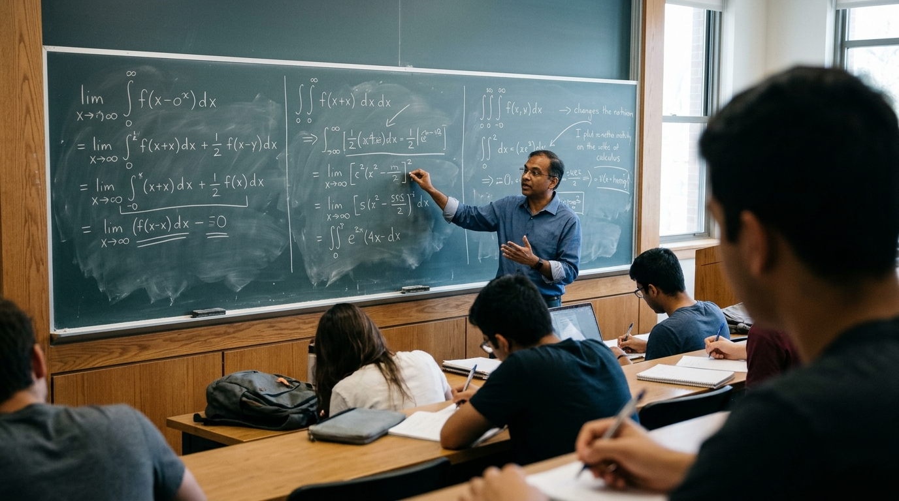
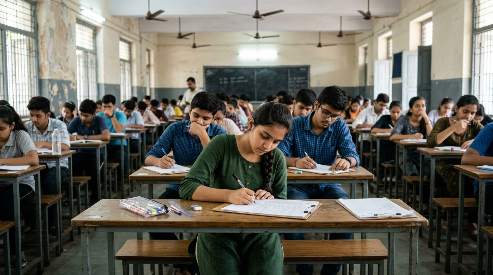

The Two-Year Intermediate MPC Journey
In the Indian educational architecture, the Intermediate stage (Class 11 and Class 12 equivalent) is pivotal. It transforms foundational secondary learning into advanced discipline-specific knowledge, preparing young scholars for university entrance and competitive engineering tests.
The MPC stream concentrates on the triumvirate of quantitative and experimental sciences: Mathematics, Physics, and Chemistry. Our academic roadmap ensures balanced pacing, comprehensive syllabus coverage, frequent assessments, and structured revision to maximize student readiness.

Two-Year Intermediate Curriculum Matrix
Illustrative breakdown of subjects across both academic years.
First-Year Intermediate (Junior Inter)
Year 01Establishes core analytical concepts, foundational algebra, coordinate geometry, classical mechanics, and atomic structures.
- Mathematics IA: Functions, Mathematical Induction, Matrices, Trigonometry, Hyperbolic Functions, Properties of Triangles.
- Mathematics IB: Coordinate Geometry (Locus, Straight Lines, Pair of Straight Lines, 3D Coordinates), Limits & Continuity, Differentiation.
- Physics (Theory & Practical): Units & Measurements, Motion in a Straight Line & Plane, Laws of Motion, Work Energy Power, Gravitation, Oscillations, Thermal Properties.
- Chemistry (Theory & Practical): Atomic Structure, Periodic Table, Chemical Bonding, States of Matter, Stoichiometry, Thermodynamics, Hydrocarbons.
- English: Communication, Prose, Poetry, Grammar, and Composition.
- Second Language: Sanskrit / Hindi / Telugu or approved language as per applicable board norms.
Second-Year Intermediate (Senior Inter)
Year 02Deepens advanced calculus, probability, electrodynamics, optics, chemical kinetics, organic mechanisms, and board practical examinations.
- Mathematics IIA: Complex Numbers, De Moivre's Theorem, Quadratic Expressions, Permutations & Combinations, Binomial Theorem, Probability, Random Variables.
- Mathematics IIB: Circles, System of Circles, Parabola, Ellipse, Hyperbola, Indefinite & Definite Integration, Differential Equations.
- Physics (Theory & Board Practicals): Electrostatics, Current Electricity, Magnetism, Electromagnetic Induction, Alternating Current, Wave Optics, Modern Physics.
- Chemistry (Theory & Board Practicals): Solid State, Solutions, Electrochemistry, Chemical Kinetics, Coordination Chemistry, Organic Reactions, Biomolecules.
- English: Advanced comprehension, report writing, literature analysis.
- Second Language: Classical & contemporary literature, advanced language skills.
Sample Academic Schedule
An illustrative daily routine demonstrating how academic lectures, problem-solving, and laboratory practicals are balanced throughout the day.
| Time Interval | Academic Session / Activity | Focus & Learning Objective | Session Type |
|---|---|---|---|
| 8:00 AM – 9:00 AM | Morning Study & Revision | Self-study, formula revision, homework doubt clarification | Guided Study |
| 9:00 AM – 1:00 PM | Core Academic Lecture Sessions | Comprehensive conceptual coverage of Mathematics, Physics, and Chemistry | Classroom |
| 1:00 PM – 2:00 PM | Lunch & Break | Nutritional pause, peer interaction, relaxation | Recess |
| 2:00 PM – 4:00 PM | Academic Sessions & Problem Workshops | Graded numerical practice, derivation walkthroughs, and tutorials | Interactive |
| 4:00 PM – 5:00 PM | Practical Lab / Daily Revision | Hands-on science lab sessions or daily review and practice tracking | Practical / Study |
* Illustrative Demo Timetable: This is a representative sample schedule and does not constitute a binding institutional timetable.

Classroom Learning
Lectures are paced to ensure clear comprehension. Faculty illustrate theoretical derivations step-by-step with real-world examples and interactive Q&A.

Practical Education
Dedicated lab hours enable students to test physical hypotheses, master measurement apparatus, and perform quantitative titration procedures.

Assessments & Board Prep
Regular weekend tests, unit assessments, and pre-board examinations build time management, presentation discipline, and examination confidence.
EXPLORE OUR DEDICATED SUBJECT BREAKDOWNS
Dive deep into our detailed Mathematics, Physics, and Chemistry curricula and learning approaches.